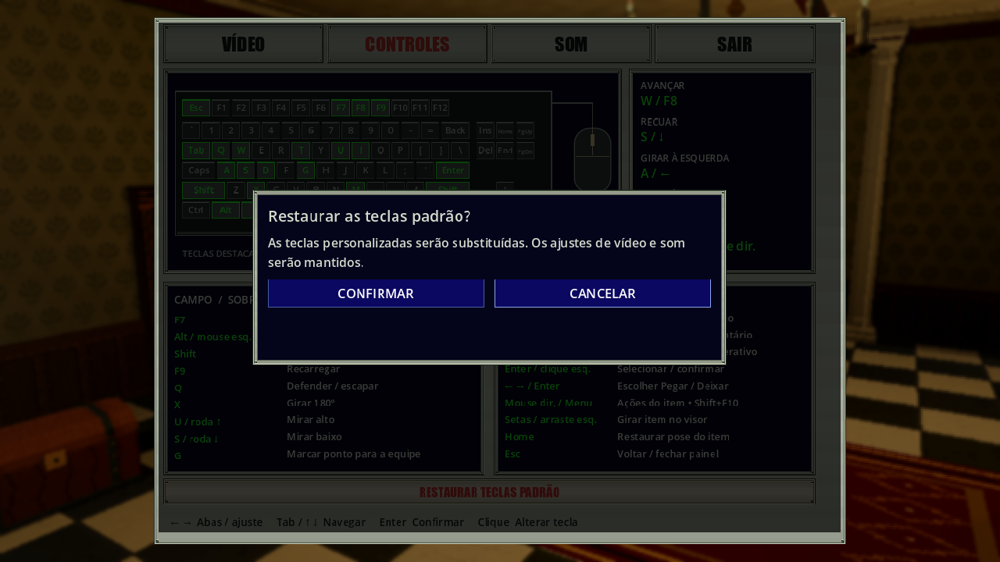

Restaurar teclas padrão · 15/10/2026
Revisão visual posterior: estilos azuis e teclado verde.
As capturas atuais usam os novos estilos; os 377 checks abaixo pertencem à
rodada original. Capturas anteriores em media/history/pre-ui-style-2026-10-15/.
Na aba CONTROLES, RESTAURAR TECLAS PADRÃO abre uma confirmação antes de alterar qualquer vínculo. CANCELAR recebe foco inicial. Esquerda/direita alternam, Enter ou clique ativam; CANCELAR e Esc apenas fecham o diálogo e devolvem o foco ao botão. As teclas personalizadas continuam intactas.


CONFIRMAR restaura todas as teclas principais e secundárias de Controls.Defaults,
incluindo W/S para a altura da mira. Desenho e campos são atualizados ao vivo.
Vídeo, volumes, mouse, roda e controle mantêm seus ajustes/vínculos. Esc ou
SAIR do painel salvam o resultado, como os demais ajustes de configurações.
O diálogo mantém a apresentação existente: pausa/desfoque/música abafada somente no solo. Host e cliente cooperativos continuam com autoridade e tempo ativos, cenário apenas escurecido e música normal.
Implementação e validação
Mudança em Game/SettingsPanel.cs e Game/SettingsBindings.cs: botão metálico
do inventário e confirmação pelo mesmo diálogo local usado na edição de teclas.
Não altera Core, protocolo, schema de preferências ou saves de campanha.
O reset só limpa os overrides de teclado após confirmação explícita.
Fixture Tools/PauseMenuAcceptance.tscn com
--settings-suite --binding-suite --restore-suite, ampliada por
Tools/RestoreBindingsAcceptance.cs. Preserva/restaura as preferências pessoais
em memória. A edição prévia cria vínculos personalizados para testar abrir sem
aplicar, foco inicial, cancelamento por Enter/Esc/mouse, confirmação por teclado
e mouse, atualização do guia, persistência por Esc/SAIR e pausa/relógio por modo.
Também reexecuta as regressões de remapeamento, mira W/S/roda e menu Esc.
Rodada final: 377 checks aprovados, zero falhas, em solo, host e cliente ENet local, incluindo confirmação por teclado/mouse e cancelamento por Enter/Esc/mouse. Sem erros de script, envio ou aviso de MTU no log final. Também passaram 86 CoreTests, 16 verificações Python, build C# sem avisos/erros e importação Godot 4.7.2 .NET. As capturas foram conferidas no renderer; o botão recebeu ajuste de contraste após a primeira rodada.
Capturas originais do Godot em 4:3/16:9, com inputs sintéticos; cenários solo,
host com outro cliente e App cliente de autoridade dedicada ENet em localhost.
Saída local em Build/settings-restore-2026-10-15/; logs
Build/settings-restore-*.log. Base Git local e059383, com alterações
preexistentes não commitadas preservadas; não é SHA final de release/capturas.
As imagens anteriores ficam em media/history/pre-restore-2026-10-15/;
fonte/exportador e hashes em Tools/build_public_galleries.py e
Docs/media-manifest.json foram atualizados. Não há novos SFX ou assets 3D.
Sem controles físicos, audição crítica, campanha completa, Internet, exports ou profiling nesta rodada. ENet dirigido local não equivale à homologação geral de multiplayer. Sem mudança de rede/save de campanha, não exige repetir a matriz completa de concorrência/reconexão/restore.